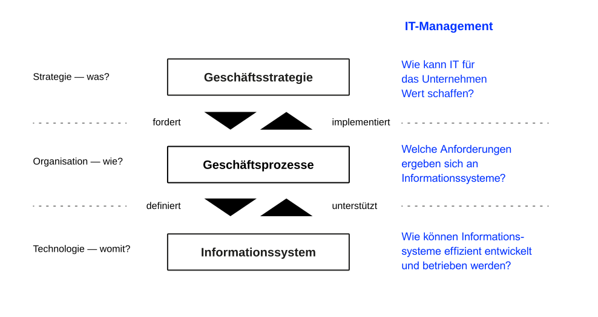
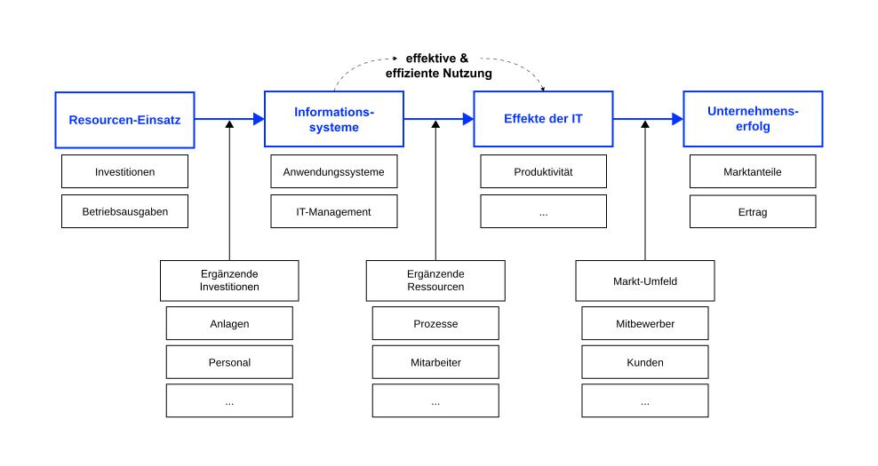
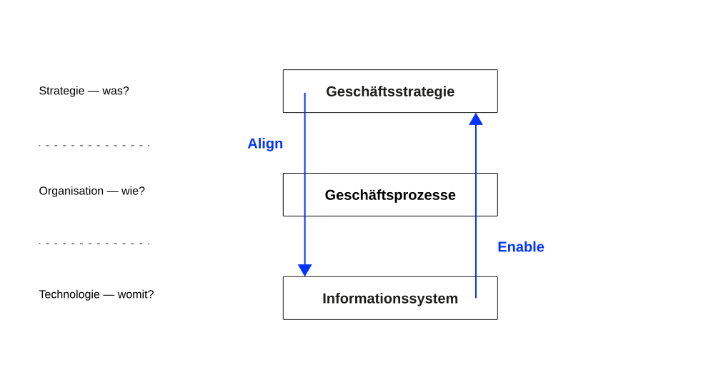
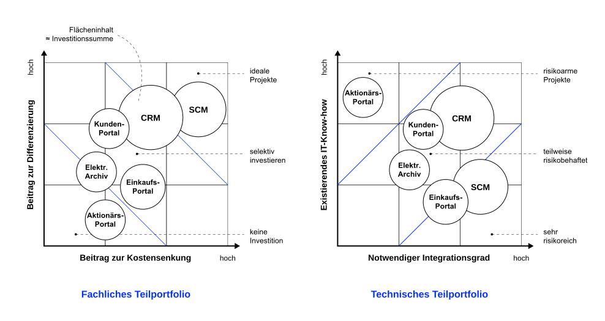
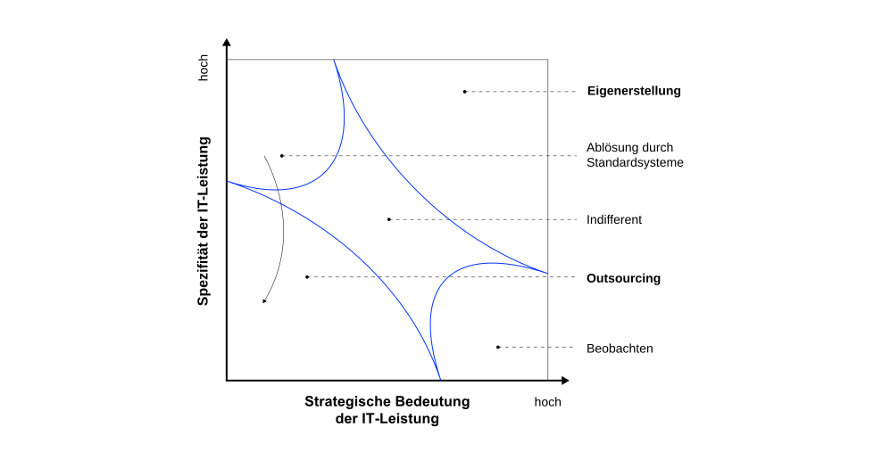
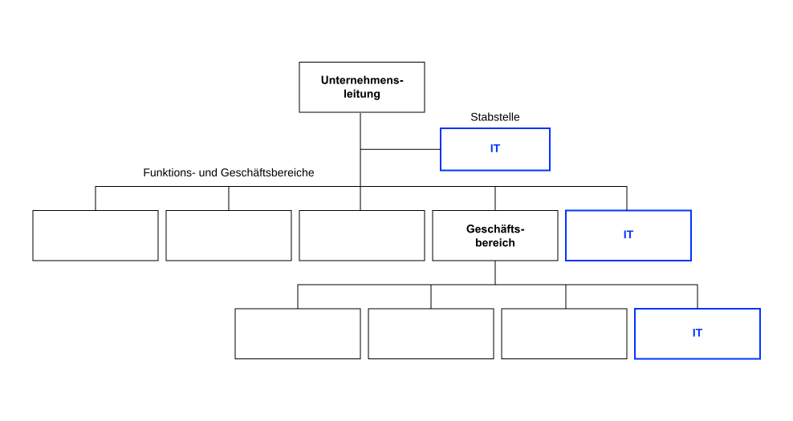
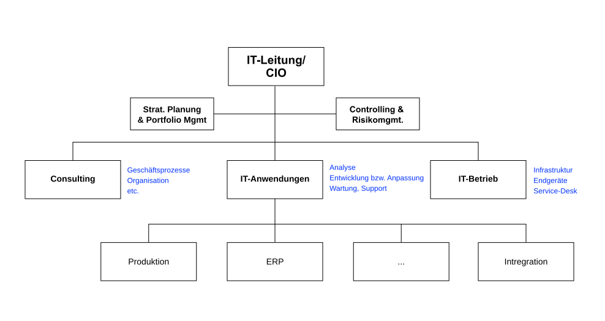

IT-Management (E10)
Wie wird IT im Unternehmen gesteuert?
Motivation
Ohne IT-basierte Anwendungssysteme sind viele Unternehmen überhaupt nicht mehr funktionsfähig. Das Management der Ressource IT ist damit zu einem wichtigen Thema des Managements geworden Mertens et al. (2016, S. 160)
Informationstechnologie ermöglicht Unternehmen im digitalen Zeitalter die Entwicklung von entscheidenden Fähigkeiten. Analog zu anderen Produktionsfaktoren schafft jedoch auch IT nicht per se Wettbewerbsvorteile für Unternehmen. Denn es ist nicht die Technologie, die den Unterschied macht. Entscheidend ist die Art und Weise, wie die Technologie implementiert, gesteuert und genutzt wird. In diesem Kapitel erhalten Sie einen ersten Einblick in die Notwendigkeit und Ansätze für das Management der Ressource IT.
Lernergebnisse 🎯
Nach dieser Einheit
- können Sie erläutern, unter welchen Bedingungen IT zum Unternehmenserfolg beiträgt,
- sind Sie in der Lage, die wesentlichen Management-Aufgaben der IT im Unternehmen zu beschreiben,
- kennen Sie die Notwendigkeit und Möglichkeiten zum Managements des IT-Projektportfolios und der IT-Landschaft,
- können den Nutzen und Kriterien für das Outsourcing von IT-Leistungen beschreiben und
- können Sie erläutern, wie IT in die Unternehmensorganisation eingebunden werden kann.
Begriffsklärung
IT-Management
Unter dem Begriff des IT-Managements lassen sich diejenigen Aufgaben fassen, die sich für die Leitung eines Unternehmens aus der Nutzung von IT ergeben.
Das IT-Management umfasst die Planung, Überwachung und Steuerung der Informationsarchitektur des Unternehmens (strategische Ebene) und der einzelnen Komponenten dieser Infrastruktur (taktische Ebene) sowie deren Nutzung (operative Ebene).
Wesentliche Aufgaben sind:
- Entwicklung und Umsetzung der IT-Strategie (IT als strategischer Wettbewerbsfaktor),
- Gestaltung des Aufbaus der Informationssysteme sowie
- Realisierung und Betrieb der IT-Landschaft
Einbettung

Wertbeitrag der IT
Der Wertbeitrag der IT beschreibt die subjektive Zusammenfassung der Kosten und der Nutzeffekte einer Investition in IT-Lösungen (Krcmar, 2015).
Die Kosten einer IT-Lösung sollten über die gesamte Lebensdauer hinweg bestimmt werden, wobei die Abschätzung des Nutzens üblicherweise schwieriger ist als die Kostenbestimmung (Mertens et al., 2016).
Erst wenn die Informationssysteme auf die Unternehmensstrategie und die Geschäftsprozesse abgestimmt sind, kann IT einen Wertbeitrag zum Unternehmenserfolg leisten.
Durch die erfolgreiche Abstimmung kann IT die Produktivität erhöhen und bessere Entscheidungen ermöglichen sowie neue Produkte und Services möglich machen und sich somit zu einem strategischen Wettbewerbsfaktor entwickeln.
Visualisierung

Effekte der IT-Nutzung
Richtig eingesetzt führt IT zu höherer Produktivität und größerem Nutzen (Sambamurthy & Zmud, 1994), zum Beispiel:
- IT wird in neue Produkte/Dienstleistungen integriert, die z. B. zu einer erhöhten Kundenzufriedenheit führen.
- IT ermöglicht die Implementierung von effizienteren Geschäftsprozessen, die z. B. zu höherer Produktivität oder Mitarbeiterzufriedenheit führen.
- IT verbessert die Entscheidungsfindung, indem bspw. ein besseres Verständnis von Märkten und Kunden ermöglicht wird.
- IT ermöglicht flexible und anpassungsfähige Organisationsformen, die bspw. zu kürzeren Vorlaufzeiten bei der Produktentwicklung führen.
Umsetzung
Wir haben gesehen, dass IT erhebliche Wertbeiträge (Produktivität, Entscheidungen, Innovation) leisten kann.
Das gelingt jedoch nur unter bestimmten Bedingungen (Abstimmung auf Strategie & Prozesse):
IT muss strategisch geplant, gestaltet und betrieben werden
Im Folgenden betrachten wir die Handlungsfelder des IT-Managements, um diese Ziele zu erreichen.
Handlungsfelder
IT Governance
Die IT-Governance regelt Entscheidungsrechte und Verantwortlichkeiten für IT-Entscheidungen, um sicherzustellen, dass die IT die Unternehmensziele unterstützt (Abts & Mülder, 2017).
IT-Governance umfasst unter anderem folgende Handlungsfelder:
- IT-Strategie: Ausrichtung der IT an Unternehmenszielen und Definition langfristiger IT-Ziele
- IT-Projektportfolio: Auswahl und Priorisierung von IT-Investitionen nach strategischer Passung
- Informationsarchitektur: Gestaltung und kontinuierliche Weiterentwicklung der IT-Landschaft
- IT-Sourcing: Entscheidung über Eigenerstellung vs. Fremdbezug von IT-Leistungen
- IT-Organisation: Strukturierung der IT-Funktion und Einbindung ins Unternehmen
Durch effektive IT-Governance wird sichergestellt, dass IT-Ressourcen effizient eingesetzt und IT-Risiken angemessen gesteuert werden.
IT-Strategie
Um die genannten Wertbeiträge systematisch zu realisieren, benötigen Unternehmen eine durchdachte IT-Strategie, die folgende Aspekte festlegt:
- die grundlegenden langfristigen Ziele eines Unternehmens hinsichtlich der Gestaltung und Nutzung der Informationstechnologie
- die Handlungsoptionen, die zur Erreichung dieser Ziele erforderlich sind sowie
- die Ressourcen-Allokation, insbesondere die Zuweisung von Investitionsmitteln und Betriebsausgaben festgelegt.
Auch die IT-Strategie richtet den Blick nach Außen und versucht, die Chancen und Risiken verfügbarer Technologien mit den Fähigkeiten und Ressourcen des Unternehmens in Einklang zu bringen.
Die IT-Strategie definiert, in welche Technologie investiert wird, um gemeinsam mit ergänzenden Ressourcen effektive Informationssysteme zu schaffen, die durch ihre Effekte im gegebenen Marktumfeld Wettbewerbsvorteile erzielen.
Align-Enable Wirkrichtungen
Um die Wertbeiträge zu generieren, müssen die Informationssysteme so gestaltet und gemanagt sein, dass diese die vorhandenen Prozesse und indirekt die Strategie des Unternehmens möglichst optimal unterstützen („align“).
Gleichzeitig können Informationssysteme so gestaltet werden, dass diese komplett neue Prozesse und neue Geschäftsstrategien ermöglichen. Auch solche Potenziale müssen in der Strategie-Entwicklung identifiziert und festgeschrieben werden („enable“) (Abts & Mülder, 2017).

IT-Projektportfolio
Vor der Umsetzung eines oder mehrerer IT-Projekte mittels dem passenden Vorgehensmodell muss in der Regel zwischen mehreren Projektideen und deren strategischer Passung entschieden werden.
Neben ökonomischen Aspekten (Wertbeitrag) sollten bei der Auswahl auch technische Kriterien (bspw. notwendiger Integrationsgrad und vorhandenes Know-how) bewertet werden (Mertens et al., 2016).
- In der Bewertung werden unterschiedliche Teil-Portfolios gebildet (bspw. fachliches und technisches Teilportfolio).
- Projekte werden typischerweise auf Basis subjektiver Bewertungen fachkundiger Mitarbeiter in den Portfolios positioniert.
- Durch die Bewertung können dann Projekte ausgewählt werden, die bspw. einen hohen Nutzen stiften und gut machbar sind.
Visualisierung

Informationsarchitektur
Die Informationsarchitektur (oder IT-Landschaft) beschreibt alle im Unternehmen eingesetzten IT-Komponenten in folgenden Bereichen (Mertens et al., 2016):
- Anwendungsarchitektur: beschreibt welche Anwendungssysteme welche Geschäftsprozesse und Funktionen unterstützen. Hierbei werden unter anderem Prozesslandkarten und Wertschöpfungsdiagramme ergänzt um die eingesetzten Informationssysteme eingesetzt.
- Datenarchitektur: bildet die Datenbestände (Wo sind welche Daten gespeichert?) und deren Struktur (Welche Datenmodelle liegen zugrunde?) ab. Hierzu sind unternehmensweite Datenmodelle hilfreich.
- Kommunikationsarchitektur bildet den Datenfluss zwischen Funktionen und Datenbeständen ab.
- IT-Architektur: beschreibt, die technische Infrastruktur (typischerweise Server, Endgeräte, Netzwerke).
Ziel des IT-Managements ist es, diese Bereiche kontinuierliche auf die Geschäftsprozesse und Aufbauorganisation abzustimmen.
IT-Sourcing
Die Make-or-Buy-Entscheidung ist eine wesentliche Komponente der IT-Strategie und beeinflusst sowohl das IT-Projektportfolio als auch die Informationsarchitektur. Der externe Bezug von Leistungen („buy“) wird oft als Outsourcing bezeichnet.
Bei diesem Entscheidungsproblem sollten vier Aspekte berücksichtigt werden (Mertens et al., 2016):
- Welche Aufgaben der IT werden betrachtet (was)?
- Wo könnten Vorteile des Fremdbezugs liegen (warum)?
- Wie genau wird der Fremdbezug ausgestaltet (wie) und
- Wohin wird die Leistungserstellung verlagert (wohin)?
Wesentliche Gründe für das Outsourcing sind neben Kostensenkungen die Konzentration auf Kernkompetenzen und der Zugang zu fehlendem Know-how.
Entscheidungsmatrix

Organisation
Die IT sollte so organisiert und geleitet sein, dass diese an den Geschäftszielen ausgerichtet ist, verantwortungsvoll die verfügbaren Ressourcen einsetzt sowie das Risikomanagement angemessen betreibt (Meyer et al., 2003).
Einordnung der IT
Die Unternehmens-IT kann grundsätzlich auf drei verschiedene Arten in die Organisation eines Unternehmens eingeordnet werden: als Stabsstelle, als Linienfunktion oder in einer Mischform.
- IT als Stabsstelle der Geschäftsleitung: IT agiert als verlängerter Arm der Unternehmensleitung
- IT als Linienfunktion: IT agiert mit anderen Funktions- und Geschäftsbereichen auf Augenhöhe
- Mischformen: Zentrale Funktionen der IT sind als Stabsstelle organisiert, geschäftsspezifische Funktionen den Geschäftsbereichen untergeordnet
Einige Unternehmen gliedern die IT oder Teile davon in selbstständige Unternehmen aus, um die Effizienz der Leistungserstellung durch tatsächliche Marktkräfte zu optimieren (Mertens et al., 2016).
Visualisierung

Interne Organisation
Hauptaufgaben einer IT-Abteilung sind die Entwicklung sowie der Betrieb von Anwendungssystemen. Dazu sind ganz unterschiedliche Kompetenzen erforderlich.
Aus diesen Gründen finden sich in der IT typischerweise separate Einheiten für die Entwicklung und für den Betrieb der Systeme. Diese stellen den Kern einer IT-Abteilung dar.
Je nach Positionierung der IT umfasst diese auch folgende Einheiten:
- Strategische Planung und Architektur-Management
- IT-Controlling und IT-Sourcing
- IT-Risiko-Management und Datensicherheit
- Beratung (Entwicklung neuer Prozesse oder IT-basierter Produkte)
Visualisierung

Risikomanagement
Aufgrund der zentralen und noch wachsenden Bedeutung der IT ist sowohl das mit dem Betrieb verbundene Risiko zu berücksichtigen als der geltende Rechtsrahmen zur Speicherung und Verarbeitung von Daten (Mertens et al., 2016).
- Identifikation, Analyse und Bewertung der mit IT verbundenen Gefahren (bspw. Hackerangriff, Stromausfall, etc.).
- Planung und Umsetzung geeigneter Maßnahmen zur Vermeidung oder Beherrschung dieser Unsicherheiten (technische oder organisatorische Maßnahmen).
- Laufende Überwachung und bedarfsgerechte Anpassung der getroffenen Maßnahmen.
Besonderes Augenmerk gilt zudem dem Datenschutz, insbesondere dem Schutz personenbezogener Daten.
Übungen ✏️
Begriffe & Wertbeitrag
Nennen Sie ein Unternehmen und einen konkreten IT-Wertbeitrag aus einer der vier Kategorien nach Sambamurthy & Zmud (1994):
- Neue Produkte/Dienstleistungen
- Effizientere Prozesse
- Bessere Entscheidungen
- Flexible Organisationsformen
Welche Voraussetzungen müssen erfüllt sein, damit dieser Wertbeitrag tatsächlich eintritt? (Bezug zu Abbildung 2)
10:00
IT-Projektportfolio
Szenario:
Ein mittelständisches Fertigungsunternehmen (350 MA) hat drei IT-Projektideen:
Projekt A: Migration auf Cloud-ERP (SAP S/4HANA)
- Kosten: 800k €, Dauer: 18 Monate
- Nutzen: Prozessoptimierung, Echtzeitdaten
Projekt B: KI-basierte Predictive Maintenance
- Kosten: 200k €, Dauer: 6 Monate
- Nutzen: Reduktion ungeplanter Ausfälle
Projekt C: Modernisierung IT-Infrastruktur (Server-Erneuerung)
- Kosten: 150k €, Dauer: 3 Monate
- Nutzen: Stabilität, Compliance
Ihre Aufgaben:
- Bewerten Sie jedes Projekt nach fachlichem Nutzen (hoch/mittel/niedrig) und technischer Machbarkeit (hoch/mittel/niedrig). Begründen Sie kurz.
- Positionieren Sie die Projekte in einem Portfolio wie Abbildung 4.
- Welches Projekt würden Sie priorisieren? Begründen Sie Ihre Entscheidung unter Berücksichtigung von Risiken.
15:00
IT-Sourcing-Entscheidung
Szenario (Fortsetzung):
Für die drei Projekte muss nun entschieden werden, welche Aufgaben intern (make) oder extern (buy) erbracht werden.
Nutzen Sie Abbildung 5 und entscheiden Sie für Projekt A (Cloud-ERP):
- Projektmanagement – make oder buy? Begründung?
- Customizing/Konfiguration – make oder buy? Begründung?
- Schulung der Mitarbeitenden – make oder buy? Begründung?
- Betrieb nach Go-Live – make oder buy? Begründung?
Berücksichtigen Sie dabei:
- Strategische Bedeutung (Wettbewerbsrelevanz)
- Vorhandenes Know-how (treffen Sie Annahmen)
- Kosten (treffen Sie Annahmen)
15:00
Align-Enable-Analyse
Ein Dienstleistungsunternehmen stellt fest:
- IT wird nur als Kostenfaktor gesehen
- Systeme unterstützen Prozesse nicht effektiv
- Technische Innovationen fließen nicht in Unternehmensstrategie ein
Ihre Aufgaben:
- Ordnen Sie die drei Probleme den Wirkrichtungen zu: Welche betreffen Align (IT folgt der Strategie)? Welche betreffen Enable (Strategie folgt den Möglichkeiten der IT)?
- Schlagen Sie je eine konkrete Maßnahme pro Problem vor: Welche Handlungsfelder sind betroffen? Was muss das IT-Management tun?
15:00
Lernkontrolle 🧐
- Beschreiben Sie die wesentlichen Aufgaben des IT-Managements.
- Das IT-Management hat unter anderem zur Aufgabe, den Einsatz von IT so zu planen und zu steuern, dass die Geschäftsziele erreicht werden. In der Vorlesung haben wir hier zwischen zwei verschiedenen Pfaden entschieden: align und enable. Erläutern Sie anhand des Business-Engineering-Modells, was das IT-Management jeweils sicherzustellen hat.
- Nennen und erläutern Sie zwei der generischen Effekte, die IT auf den Unternehmenserfolg haben kann. Welche Voraussetzungen sind notwendig, damit diese Effekte eintreten können?
- Anhand welcher Kriterien sollten IT-Projekte bzw. Investitionen evaluiert werden?
- Geben Sie jeweils ein Beispiel für eine ausgelagerte und eine nicht-ausgelagerte Aufgabe der IT und erläutern Sie, weshalb eine Auslagerung (nicht) sinnvoll ist.
- Erläutern Sie, weshalb das Management der IT-Landschaft zur Erhöhung der vertikalen und horizontalen Integration notwendig ist.